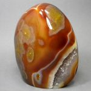

Сердолик - название (по сути исторически-бытовое, а не научное) одной из многих разновидностей природного кремнезёма, а именно халцедона. Сердоликом называют оранжевые, оранжево-красные, буровато-красные, каштановые халцедоны, окрашенные гидроокислами и окислами железа, микроскопическими включениями гематита и гётита. Среди сердоликов, в свою очередь, выделяют: красные и оранжево-красные (карнеол (англ. Carnelian), от лат. cornum - кизил); коричнево-красные (сардер); оранжево-жёлтые и жёлтые (линкурий) разности. А также сардоникс (от греч. sardolith - камень из Сарда), представляющий собой полосчатый коричнево-красный халцедоновый (сердоликовый) оникс. Термин сердолик традиционно используется в России и русскоязычной литературе, и в наши дни как правило относим ко всем жёлто-оранжево-буро- красным халцедонам; вместе с тем на Западе в аналогичном значении укоренилось название карнеол.
Сердолик образовался в результате древних вулканических процессов в пузырях (миндалинах) лавовых потоков и жерловых образованиях вулканов, где он встречается вместе с агатом и другими цветными разновидностями халцедонов. Но свой насыщенный цвет, как считают многие геологи, он приобретает уже на поверхности, после разрушения несущих его вулканических горных пород, и в том числе, под воздействием солнечных лучей.
Месторождение лучших в России сердоликов - Восточная Сибирь: бассейн реки Зея (Амурская область), Якутия, Чукотка, Бурятия, юго-восток Читинской области; из зарубежных месторождений стоит, наверное, упомянуть Индию (Деканское нагорье, штат Гуджарат), Монголию, США (штат Монтана), остров Мадагаскар, Уругвай и Бразилию.
Каталог минералов